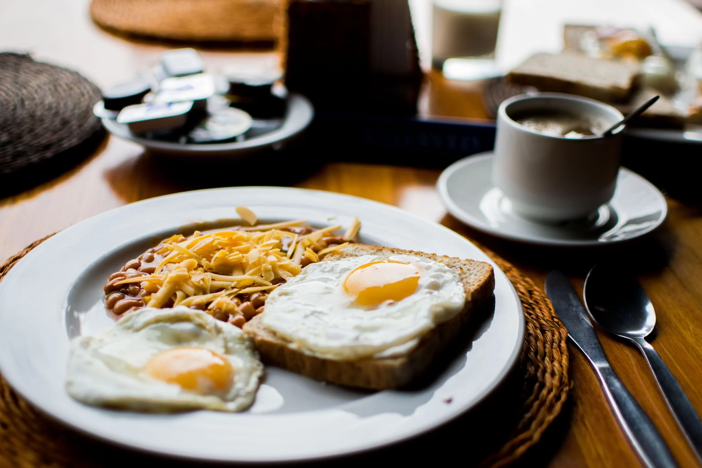
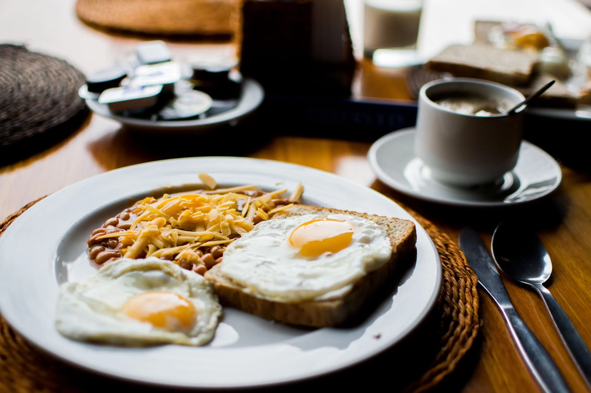

Home Away From Home Events
We offer gardening classes every Tuesday and Thursday afternoon for all ages! Bring your family along for a tour of our large outside garden area and learn how we grow the food we serve here at the Bed and Breakfast!

Join us Friday and Saturday nights for late night s'mores! Roast your own marshmallows and sit by the fire as we talk, play music, and get to know each other. Fun for the whole family!

In the Area
A lovely ski resort only 20 minutes down the road. The Summit offers 20+ lifts, terrain parks, & many restaurants & bars.
Keechelus Lake is available from late spring-early autumn for kayaking, boating, and even swimming -- within walking distance from Home Away From Home B&B! Boat and kayak rentals are available at the lake.

 



© 2024 Home Away From Home B&B. All rights reserved.